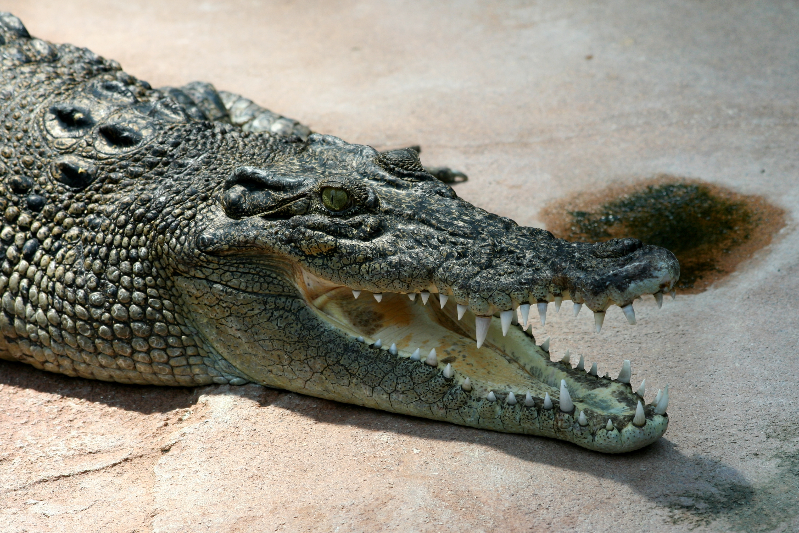
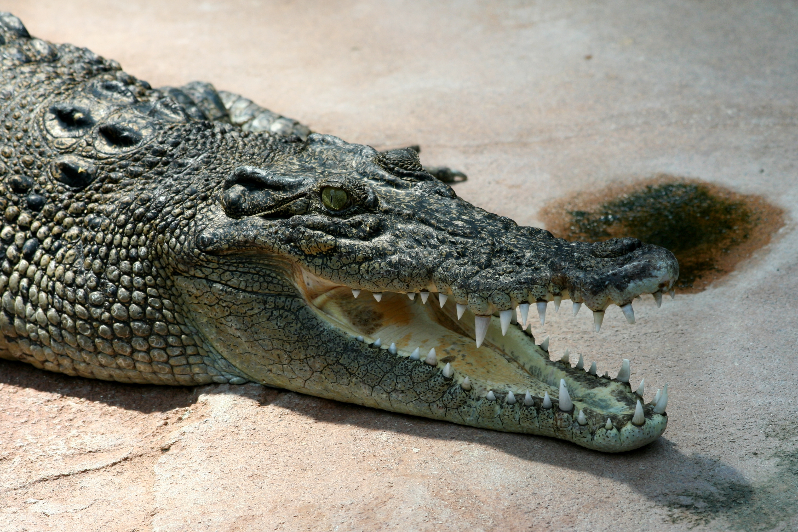

General Information
The West Sundarbans is a region located in the delta region of the Ganges, Brahmaputra, and Meghna
rivers in the Bay of Bengal. It covers an area of approximately 6,017 square kilometers and is
primarily located in the Indian state of West Bengal.
The West Sundarbans is known for its dense mangrove forests, which are home to a variety of unique
flora and fauna, including the Royal Bengal tiger, saltwater crocodiles, Indian python, and many
species of birds. It is also recognized as a UNESCO World Heritage Site.
The West Sundarbans is home to several small villages and towns, which are primarily involved in
fishing, agriculture, and forestry. The region has a tropical climate, with hot and humid summers
and mild winters.
The West Sundarbans faces several environmental challenges, including erosion, rising sea levels,
and natural disasters like cyclones and floods. However, several conservation efforts are underway
to protect the region's fragile ecosystem and its biodiversity.
History
The history of the West Sundarbans region is closely tied to the history of the Sundarbans delta as a
whole. The earliest recorded history of the Sundarbans dates back to the 3rd century BCE, when the
region was known as Ganganagar and was part of the Mauryan Empire. Over the centuries, the region
was ruled by various kingdoms and empires, including the Pala dynasty, the Sena dynasty, and the
Mughal Empire.
In the 17th century, the Sundarbans region came under the control of the British East India Company,
who established a trading post in the nearby city of Kolkata (formerly Calcutta). The British began
to exploit the region's natural resources, particularly the timber from the mangrove forests, which
was used for shipbuilding and other purposes. This led to significant deforestation and
environmental degradation in the region.
During the 20th century, efforts were made to protect the Sundarbans from further damage. In 1928,
the Sundarbans was declared a protected forest, and in 1984, it was designated a UNESCO World
Heritage Site. Today, the Sundarbans remains an important ecological and cultural site, and efforts
continue to preserve its unique biodiversity and protect it from the impacts of climate change.
Geography
The West Sundarbans region is located in the delta region of the Ganges, Brahmaputra, and Meghna
rivers in the Bay of Bengal. It is primarily located in the Indian state of West Bengal, with a
small portion extending into Bangladesh.
The West Sundarbans covers an area of approximately 6,017 square kilometers and is characterized by
its dense mangrove forests, which are interspersed with numerous creeks and tributaries. The region
is crisscrossed by a network of waterways, including the Matla, Bidyadhari, and Hogol
rivers.
The climate of the West Sundarbans is tropical, with hot and humid summers and mild winters. The
region receives heavy rainfall during the monsoon season, which typically lasts from June to
September.
The mangrove forests of the West Sundarbans are an important ecological and cultural site, and are
home to a wide variety of flora and fauna. The region is particularly well-known for its population
of Royal Bengal tigers, which are one of the largest remaining populations of wild tigers in the
world. Other notable species found in the West Sundarbans include saltwater crocodiles, Indian
python, spotted deer, and many species of birds.
The West Sundarbans faces several environmental challenges, including erosion, rising sea levels,
and natural disasters like cyclones and floods. Efforts are underway to address these challenges and
preserve the unique ecosystem of the Sundarbans delta.
Wildlife
The West Sundarbans is known for its diverse wildlife, which includes many unique and endangered
species. The region's dense mangrove forests provide a habitat for a wide variety of flora and
fauna, including:
- Royal Bengal Tiger: The West Sundarbans is home to one of the largest populations of Royal
Bengal tigers in the world, with an estimated 100-150 individuals. These tigers are known for
their ability to swim and are adapted to the region's tidal habitat.
- Saltwater Crocodile: The Sundarbans is also home to a large population of saltwater crocodiles,
which are the largest living reptiles in the world. They can grow up to 6 meters in length and
are known for their aggressive nature.
- Indian Python: The Indian python is the largest snake found in the Sundarbans, with some
individuals growing up to 6 meters in length. They are non-venomous and rely on constriction to
subdue their prey.
- Spotted Deer: The spotted deer, also known as chital, is a common species found in the
Sundarbans. They are herbivorous and are an important prey item for tigers and other predators.
- Fishing Cat: The fishing cat is a small wild cat found in the Sundarbans, which is well-adapted
to hunting in wetland habitats. They are skilled swimmers and are known for their ability to
catch fish.
- Estuarine Crocodile: The estuarine crocodile, also known as the saltwater crocodile, is another
large crocodile species found in the Sundarbans. They are apex predators and are known for their
aggressive nature.
- Birds: The Sundarbans is home to a wide variety of bird species, including several species of
kingfishers, egrets, herons, and storks.
The wildlife of the Sundarbans is threatened by habitat loss, climate change, and poaching. Conservation
efforts are underway to protect the region's biodiversity and ensure the survival of its unique
wildlife.

 
